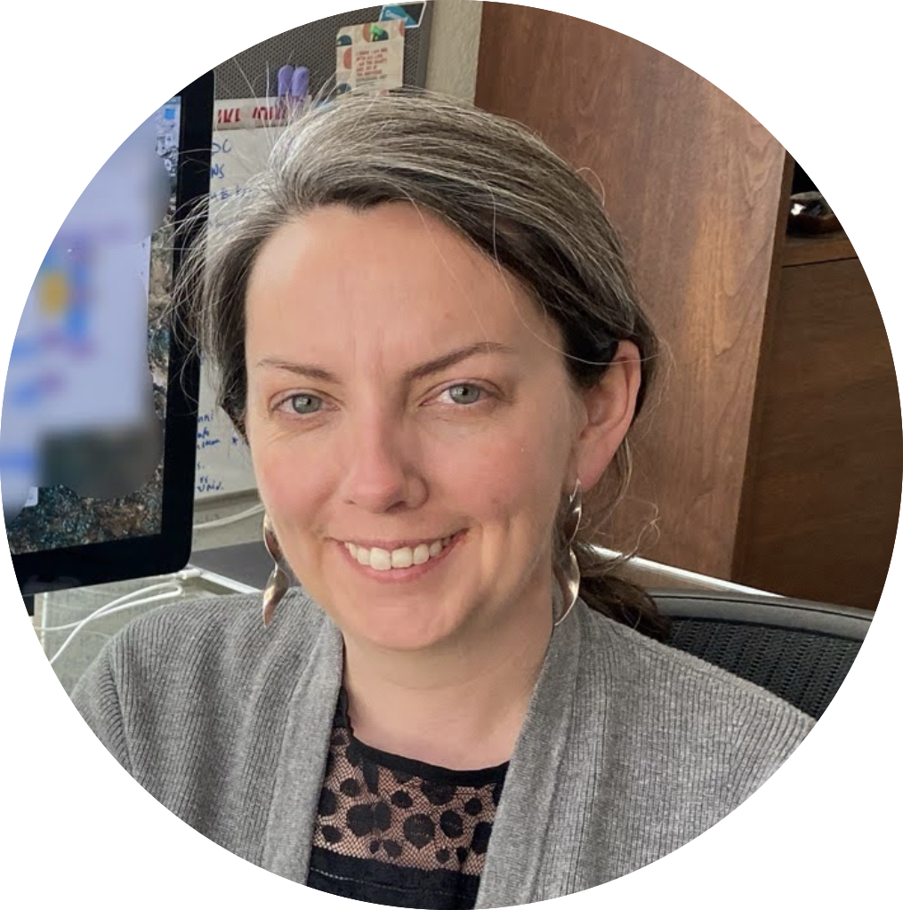

Meet the many folks behind Openscapes!

Openscapes Core Team

Julia Stewart Lowndes launched and directs Openscapes. She is a marine ecologist working at the intersection of actionable environmental science, data science, and open science. She is a Mozilla Fellow and Senior Fellow at the National Center for Ecological Analysis and Synthesis (NCEAS) at the University of California Santa Barbara, having earned her PhD from Stanford University in 2012 studying drivers and impacts of Humboldt squid in a changing climate.
Erin Robinson is a core Openscapes team member and advisor. She co-leads the NASA Framework project with Julie and has been instrumental in scaling Openscapes with lessons learned from their NASA work. Erin works at the intersection of community informatics, Earth science and non-profit management.


Ileana Fenwick is a core Openscapes team member; she is an open science advocate and Marine Sciences Ph.D. Student at UNC Chapel Hill. Ileana’s research focuses on evaluating how marine communities respond to climate change and human impacts. Her work uses innovative quantitative methods to improve our ocean management outcomes. In addition to her research, Ileana is also a fierce advocate for HBCU engagement and equity in open science and marine science through her consulting and volunteer work.
Stefanie Butland is a core Openscapes team member and co-leads Champions Cohorts. She is a research scientist by training and an open science and tech community builder by passion. Stefanie is a Fellow of the Center for Scientific Collaboration and Community Engagement.

Mentors
NASA Earthdata Mentors are supporting researchers using NASA Earthdata as they migrate workflows to the Cloud
NOAA Fisheries Mentors are supporting colleagues at NOAA Fisheries with open science practices for collaboration, particularly for shared project management and government reports.
California Water Board / CalEPA Co-leads Anna Holder and Corey Clatterbuck, both environmental scientists in the Office of Information Management and Analysis and the Surface Water Ambient Monitoring Program, mentored Champions Cohorts in 2021 and began co-leading annual Champions Cohorts at the Water Boards in 2022! Regardless of her role, Anna uses ecology, data science, and science communication to contribute to and inform the sustainable and equitable management of natural resources. Anna obtained her M.S. and B.S. from CSU Monterey Bay in Applied Marine and Watershed Science. Corey is an ecologist who uses data science to assess the condition of our natural resources and identify opportunities for conservation action. Corey earned her PhD from the Joint Doctoral Program in Ecology at San Diego State University and the University of California, Davis in 2021.
Advisors & Collaborators
Allison Horst is a long-time Openscapes advisor and collaborator. She is a data scientist, teacher, and artist. With a background in the fine arts, she also works digitally; see her Openscapes open landscapes in the gallery, her stats illustrations and follow her on Twitter.
Sean Kross is a long-time Openscapes collaborator and created the {kyber} R package to automate Openscapes cohort infrastructure. His interests are centered around understanding challenges that people doing data science face in the real world, expanding online educational opportunities to new audiences, and building tools to make the future of work and learning possible. Sean is also a frequent consultant for data analysis and software development projects, in addition to being an advocate for open data and a maintainer of several popular open source software repositories.
J.J. Allaire is a long-time Openscapes advisor and collaborator. As CEO of Posit (formerly RStudio), he is a software engineer and entrepreneur who builds tools that empower people with technology. J.J. has conceived and designed several industry leading products by balancing market, customer, and technical considerations, and by maintaining intimate involvement in all aspects of software design and construction.
Tara Robertson is an advisor and collaborator with Openscapes. She works with leaders to make companies more diverse, equitable and inclusive so that they can make inclusive and innovative products and services that the world needs. Tara is an intersectional feminist who uses data and research to advocate for equality and inclusion. She bring over 12 years experience leading change in open source technology communities, including 3 years leading Diversity and Inclusion at Mozilla. Her work on trans inclusion was featured in Forbes, her research on digitization ethics is included in Dr. Safiya Noble’s Algorithms of Oppression and an accessibility toolkit she co-authored won an international creative innovation award.
Incubators
The National Center for Ecological Analysis and Synthesis (NCEAS) helped incubate Openscapes. It conducts transformational science focused on informing solutions that will allow people and nature to thrive. Through data synthesis, collaborations, and open science, NCEAS accelerates scientific discoveries and generates big-picture insights to help solve environmental challenges. Established in 1995, NCEAS is an independent research affiliate of the University of California at Santa Barbara with a global network and impact.
Mozilla helped incubate Openscapes. It believes the internet must always remain a global public resource, open and accessible to all. Its work is guided by the Mozilla Manifesto. Mozilla focuses on fueling the movement for a healthy internet by supporting a diverse group of fellows working on key internet issues; by connecting open internet leaders at events like MozFest; by publishing critical research in the Internet Health Report; and by rallying citizens around advocacy issues that connect the well being of the internet directly to everyday life.